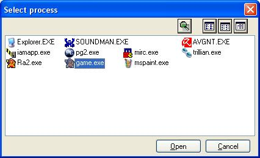
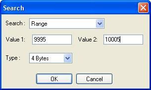
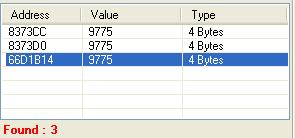
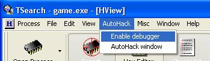
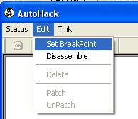
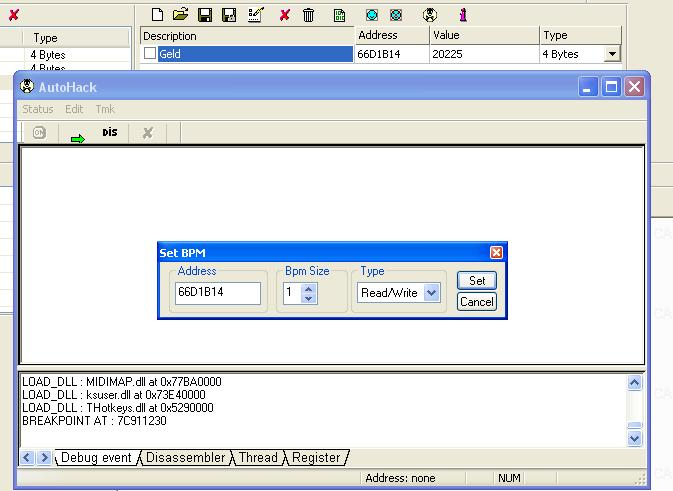
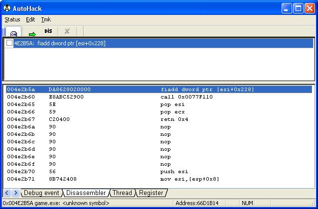
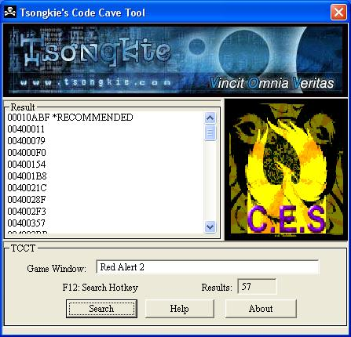

Autor: puM4
Typ: Gamehacking Tutorial
Thema: Code Injection
Ziel: C&C RA:2
Tools: TSearch, TCCT
Hallo Gamehacker,
danke, dass du dir Zeit nimmst mein Tutorial zu lesen. Es wird dich in die Kunst der
"Code-Injection" einweisen und somit helfen DMA zu bezwingen.
Und schon gehts los...
Starte nun erstmal den Memory-Searcher "TSearch". Ich verwende hier Version 1.6b, was
der aktuellsten entspricht. Direkt danach kannst du das Spiel starten. Erstelle ein
neues Einzelspieler-Gefecht gegen beliebig viele Computerspieler. Sobald das Spiel
anfängt, drücke ESC und wechsle mit ALT+TAB zurück zu Windows / zum TSearch-Fenster.
Unter "Open Process" selektierst du jetzt das Spiel.

Jetzt beginnst du mit der Suche. Dies geht mit dem Lupen-Icon direkt unter dem
"Open Process"-Icon. Jetzt musst du den Geldwert aus dem Spiel suchen (bei mir
10000). Nicht schaden kann es, wenn man auf Nummer sicher geht und per Range-Option
sucht. Da nicht immer Angezeigter Wert und realer Geldwert zu 100% Übereinstimmen.

Diesen Vorgang wiederholen wir jetzt bis wir nur noch sehr wenige bzw. nur noch den
einen Richtigen Wert gefunden haben. Allerdings nicht mit dem Lupen-Icon, sondern mit
dem daneben... mit den 3 Punkten auf der Lupe.
Am Ende sollte es ähnlich wie hier aussehen:

Jetzt müssen wir noch testen, welcher der Richtige Wert ist... also den Wert ändern und
im Spiel überprüfen, ob es funktioniert hat. Bei mir war es der unterste. Zudem empfiehlt
es sich, mit etwas "abweichenden" Werten zu beginnen. In diesem Fall also die "66D1B14".
Jetzt ändert sich die Speicheradresse aber bei jedem Spielstart... also nützt es nichts
diese eine Adresse mit einem Trainer zu patchen. Da sich diese Adresse immer ändert, wird
sie mit DMA (Dynamic Memory Address) bezeichnet. Das "Dynamic" bedeutet so viel wie "stetig
ändernd". Jetzt brauchen wir aber eine SMA (Static Memory Address), da sich diese nicht
verändert und bei jedem Spielstart gleich ist.
Die entsprechende Adresse, welche zu unserem Geld-Wert passt, wird auch POINTER genannt,
d.h. sie sagt dem Spiel immer wo unser Geld-Wert im Speicher steht.
Jetzt gilt es eben diese Adresse zu finden. Und das geht mit dem in TSearch integrierten
Debugger. Diesen starten wir einfach über dieses Menü-Item:

Im sich öffnenden Fenster setzen wir jetzt einen Breakpoint:


Wobei hier dringend zu beachten ist, dass es ein READ/WRITE -Breakpoint sein muss.
Darauf komme ich aber gleich noch zu sprechen.
Ist der Breakpoint also gesetzt, so wechseln wir wieder zurück in das Spiel. Jezt
allerdings NICHTS Bauen und sicherstellen, dass KEIN ERZSAMMLER zurück fährt. Der
Geldwert darf sich also in keinem Falle ändern. Denn unser Trainer soll später ja
den Geldwert immer ändern können, also brauchen wir die Adresse, an der der Wert
alle paar Sekunden gelesen wird (deswegen READ-Breaktpoint), und nicht etwa eine
Stelle, an der unser Geldwert nur geändert wird, wenn der Sammler wieder im Lager
"eincheckt" oder wir einen Gebäude-Bau starten (beides WRITE).
Wir bleiben also ca. 10 Sekunden im Spiel OHNE etwas zu machen. Danach wechseln wir
wieder zurück ins Windows. Dort sehen wir jetzt im Debugger Fenster eine Änderung:

Und wie du im Screenshot bereits erkennen kannst, muss der "Text" angeklickt werden.
Dann wechselt der Debugger automatisch in den "Disassembler"-Tab.
Das ist jetzt unsere SMA.
004E2B5A fiadd dword ptr [esi+0x228]
Das bedeutet, dass ein bestimmter Wert zur Speicheradresse [esi+0x228] (= unsere DMA)
dazuaddiert wird. Hier ist also ein guter Platz unseren eigenen Code einzufügen und
somit einen immer funktionierenden Trainer zu erstellen.
Jetzt müssen wir aber wissen, wo wir genug freien Platz haben, um unseren eigenen Code
hinzuschreiben.
Eine solche Stelle finden wir über ein Code-Cave-Tool (liegt als tcct.zip dem Tutorial bei):

Ich weiß nicht ob es gut ist die Stelle "10ABF" zu verwenden (typisch ist 400000 und aufwärts),
allerdings hat es bei mir immer wunderbar geklappt und dort ist auch seeehr viel Platz für
den eigenen Code.
Jetzt schreiben wir in TSearch ein "EasyWrite". Das ist nichts anderes als eine Art Tool, dass
unseren geschriebenen Code injected.
Der Code müsste also in diesem Fall wie folgt aussehen:
offset 10AEF
hex 01 // dazu später
offset 10ABF // unser Code-Cave
fiadd dword ptr [esi+0x228] // Dies ist die Funktion, die an der SMA steht. Sie muss
// im Code-Cave immer an erster Stelle stehen, da wir die
// Original-Stelle später im Code durch einen Sprung zu
// unserem Code-Cave überschreiben.
cmp byte [10AEF],0x01 // dazu später
jne 4E2B60 // dazu später
add dword ptr [esi+0x228],0x2710 // Addiere den Wert(in Hex) 2710 (entspricht in Dez 10000)
// zu unserem aktuellen Geldwert [esi+0x228] dazu.
mov byte [10AEF],0x00 // dazu später
jmp 4E2B60 // Ein Sprung zurück zum Programm-Code direkt unter die SMA.
offset 4E2B5A // Die SMA
jmp 10ABF // Hierdurch wird die "fiadd ..."-Funktion überschrieben.
// Das ist ein Sprung zu unserem Code-Cave... also wird
// dann unser Code ausgeführt.
nop // Da die "fiadd.."-Funktion 6 Hex-Stellen (DA 86 28 02 00 00)
// und unser Sprung nur 5 (E9 60 DF B2 FF), müssen wir die eine
// noch fehlende Stelle auffüllen... dies tuen wir mit dem NOP,
// was für No-Operation steht... das Programm liest also über
// diese Stelle, macht aber nichts.
Jetzt zu den "dazu später"-Stellen im Code:
Dies ist eine mögliche Lösung des Problems, auf Knopfdruck immer einen bestimmten Wert zum
Geld dazu zu addieren. Dies Funktioniert nicht einfach durch ein
"add dwort ptr [esi+0x228],0x2710", da dieser Code dann immer und immer wieder ausgeführt
wird. Demzufolge wird der Geldwert immer und immer weiter steigen... ohne Ende.
offset 10AEF
hex 01
Das bedeutet, dass an Offset 10AEF der Hex-Wert "01" geschrieben wird.
cmp byte [10AEF],0x01
jne 4E2B60
Hier wird überprüft, ob der Wert bei 10AEF "01" ist. Wenn nicht, springt er zurück zur
Code-Stelle nach der SMA. Das Spiel läuft also weiter, ohne das der Code darunter noch
ausgeführt wird.
Das bedeutet also allgemein, dass wir auf Knopfdruck den Wert bei 10AEF auf "01" stellen
und durch diese Gegebenheit erst weiterhin der Code ("add dword ptr [esi+0x228],0x2710")
usw. ausgeführt wird.
Da bei 10AEF jetzt aber immer "01" stehen würde, würde das Programm also auch immer und
immer wieder die 10000 zu unserem Geld dazuaddieren.
Deswegen wird nach dem dazuaddieren des bestimmten Geldwertes, der Wert bei Offset 10AEF
auf "00" umgeschrieben.
mov byte [10AEF],0x00
Jetzt ist nach einmaligem dazuaddieren also der Wert bei 10AEF auf "00" und somit wird beim
nächsten durchlauf nichts mehr dazuaddiert, sondern einfach ohne addieren fortgefahren.
Drückt man nochmal auf den Trainer-Knopf (oder Hotkey), so wird ja durch das
offset 10AEF
hex 01
der Wert auf "01" geschrieben und wieder 1x der eingestellte Wert zu unserem Geld dazuaddiert.
Wobei noch anzumerken sei, dass in TSearch 2x der Hotkey gedrückt werden muss, da TSearch beim
2. Mal nicht direkt wieder den Code injected, sondern die Code-Injections rückgängig macht.
Patcht man die Adressen allerdings mit einem Trainer, so funktioniert es mit nur einem Klick
bzw. einem Knopfdruck.
Solltet ihr eure Trainer mit dem "Trainer Maker Kit 1.51" erstellen, so könnt ihr im TSearch
Easywrite-Programmteil den Button "Tmk" anklicken. Klickt ihr jetzt noch auf "Check", so
seht ihr den Code, den ihr im "Trainer Maker Kit" verwenden müsstet, um eben diese
Code-Injection vorzunehmen.
Wenn ihr eure Trainer aber selbständig mit C++ oder einer anderen Programmiersprache codet,
so müsst ihr einfach die Hex-Werte (seht ihr auch in dem TMK-Fenster bei Easywrite) an die
entsprechenden Offets speichern.
THE END